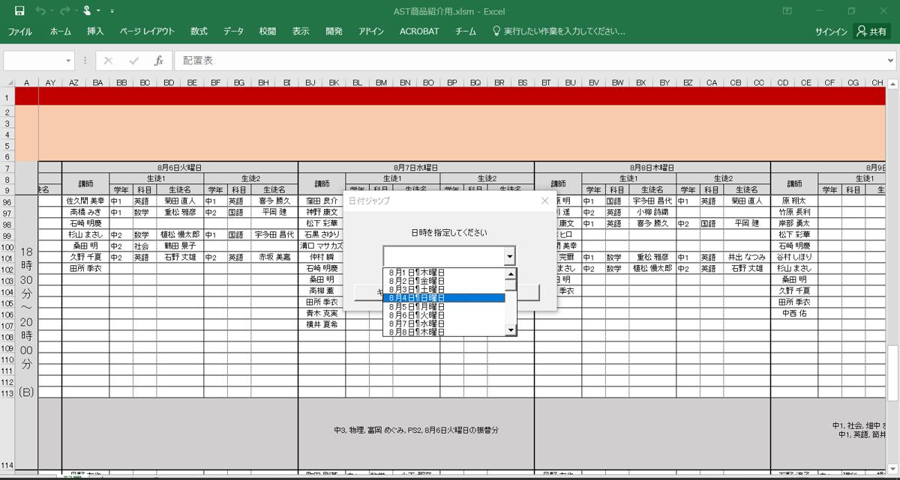
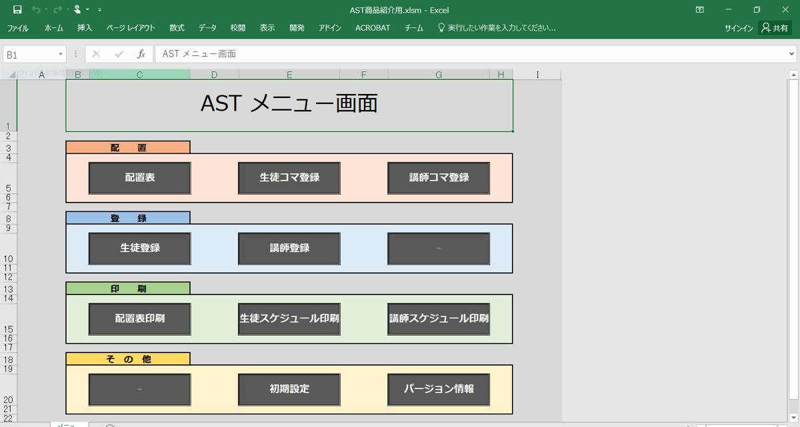
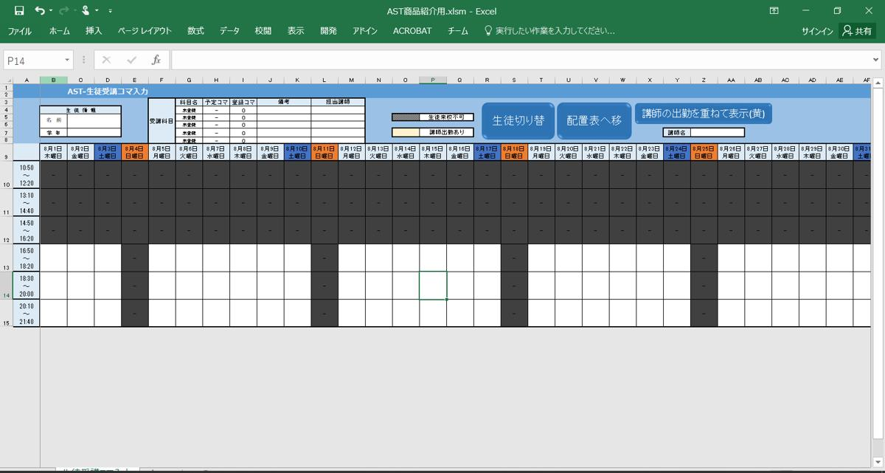
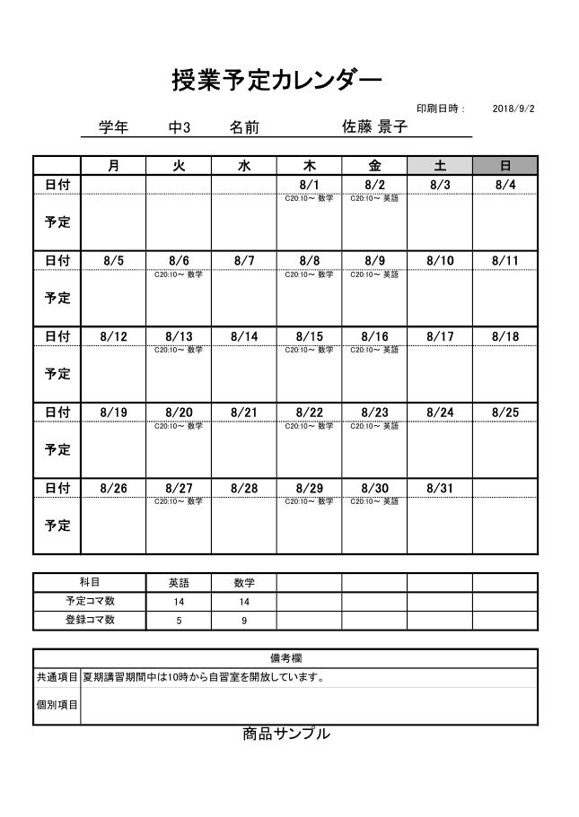
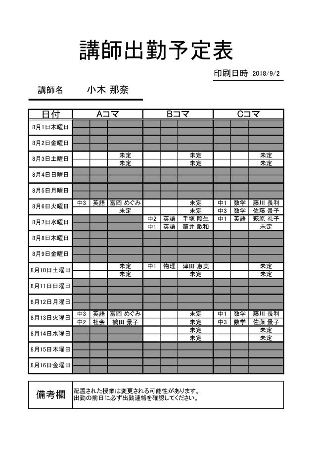

講師1人に生徒2人の組み合わせ科目・学年・相性を考えながら、毎月手作業で組んでいる。
ASTArrangement Support Tool
ASTは、個別指導塾のための授業配置システム（時間割作成ソフト）です。生徒の受講希望と講師の出勤希望を組み合わせる、パズルのような毎月の作業を、配置から配布物の印刷までExcelの上で完結させます。

配置表の画面（サンプルデータ）
Problem
Change
Feature
時間割づくりの流れに沿って、メニューにボタンが並んでいます。

01
メニューから「生徒登録」「講師登録」を開き、名前・学年・科目・予定コマ数を入れるだけ。曜日と時限を書いておけば、毎週決まった授業は自動で配置されます。

02
生徒ごとにマス目をダブルクリックして、受講したいコマと来られないコマを登録。講師の出勤コマを重ねて表示できるので、空いている先生がひと目でわかります。
03
講師を選んで「生徒1に配置」「生徒2に配置」を押すだけで1対2の組み合わせが決定。欠席の連絡が来たら、授業を選んで振替先を指定するだけです。


04
生徒一人ひとりの月間カレンダーと、講師の出勤予定表を自動で作成。複数の生徒をまとめて一括印刷することもできます。
Voice
開発した学栄社の運営塾でも、毎月の時間割と講習期間の配置に使っています。
面倒な作業がほどよく自動化されていて使いやすく、とても助かっています。
生徒が100人以上いるのですが、毎月の時間割をほんの数時間で作れるようになりました。
浮いた時間で塾の経営に注力できています。ASTを導入して正解でした。
Spec
※ 1コマの出勤講師が13人以上になる場合、時間帯が変則的な場合などは事前に調整します。
Price
0円 / 2か月
製品版と同じ機能
通常価格 300,000円（税抜）
200,000円（税抜）
2027年1月31日お申し込み分まで／ご購入から1年間サポート
※ 原則として返金はできないため、必ず体験版でお試しのうえご購入ください。
FAQ
今月のファイルをコピーして名前を変え、メニューの「初期設定」を押すだけ。生徒と講師の情報を引き継いだまま新しい月を作れます。
講師1人に生徒2人（1対1も可）の個別指導塾向けです。1日の開講数6コマまで、講師50人まで、「生徒数×受講科目数」が500まで扱えます。
WindowsのパソコンとMicrosoft Excelが必要です。Macでは動きません。
基本の操作はメニューのボタンをクリックするだけです。操作マニュアルもお渡しします。
ファイルをメールで送っていただければ修復します。生徒と講師の個人情報は、修復以外の目的には使いません。